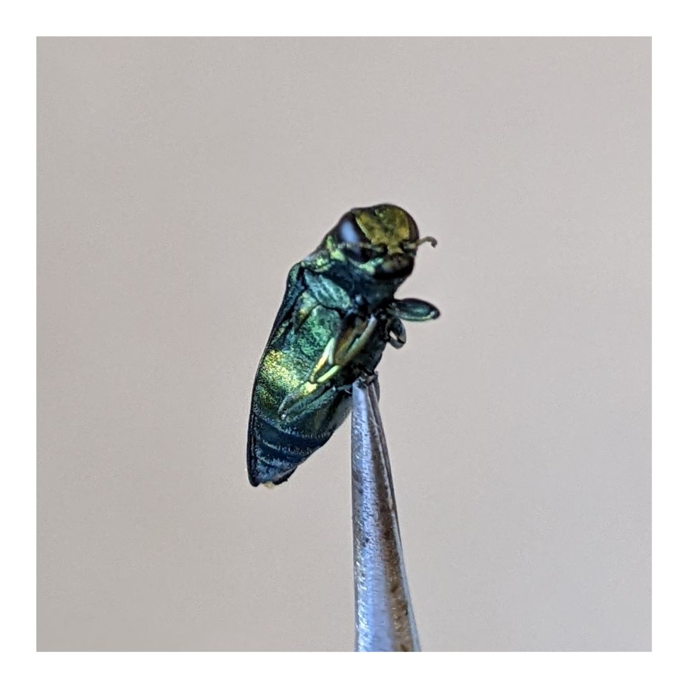
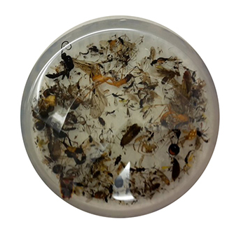
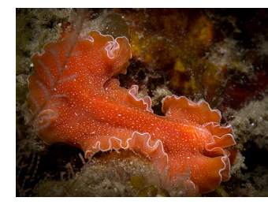
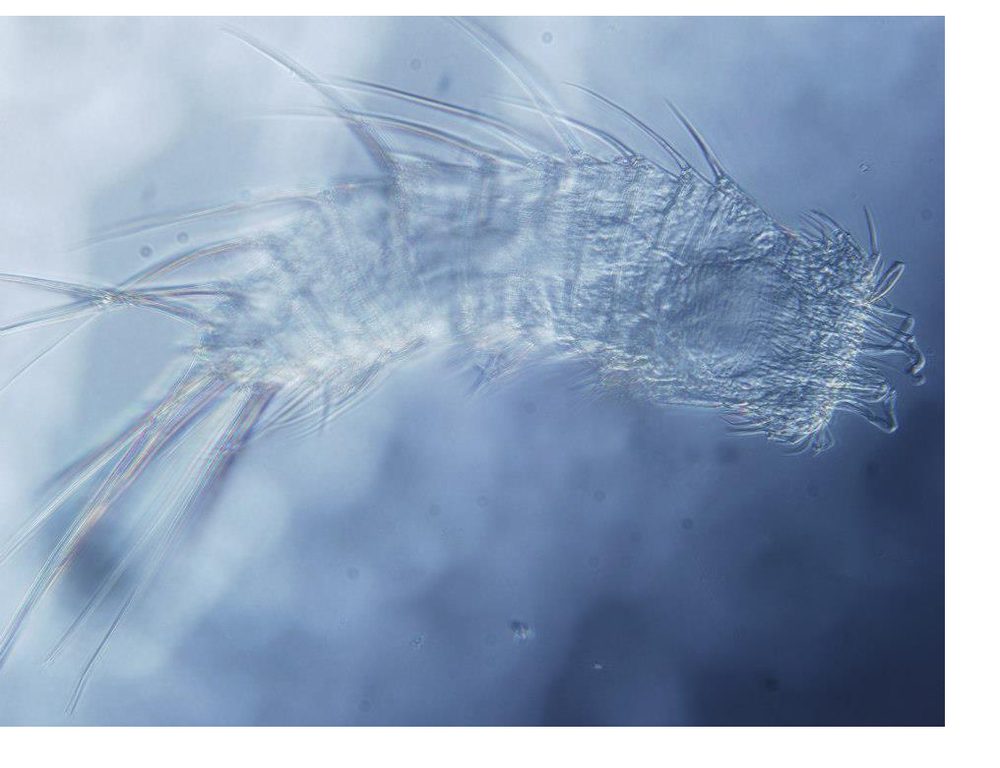

Research
I have marveled at Earth's biodiversity for as long as I can remember. For my professional career, I am interested in understanding how that biodiversity is generated and articulated in ecosystems. This means identifying and documenting the species that compose them, how they originated, and how they interact with each other. To accomplish such a task it is necessary to work with a variety of disciplines, from taxonomy, to evolutionary biology, or quantitative ecology.
As a molecular ecologist, I study ecosystems from the viewpoint of their smallest component: DNA. To do so I apply molecular techniques that rely on DNA sequencing, mainly (but not only) DNA metabarcoding. Metabarcoding is a technique that allows the simultaneous identification of species from a mixed sample by the amplification and examination of a short genetic sequence. These mixed samples can be bulk samples (for instance, an insect trap or a plankton tow net sample), environmental DNA samples (eDNA, like water from a river or soil), and other diverse types of samples (scats, gut contents, air filtering samples, etc.). Compared to traditional methods of identification, metabarcoding is faster, has higher taxonomic resolution, and can be used with samples in which the individuals are not physically present, or are degraded.
Current Projects:
Currently I am not in a reserach-related position, although I work with reserach and reserachers every day. However, I am always open for interesting collaborations relating biodiversity, ecology, and metabarcoding.
Past Projects:
Simultaneous assessment of the symbiome of insect species of natural and economic interest
Ecosystems are made of the species present in them and the interactions these species establish with each other. When an organism interacts with another (for instance, when a spider eats a fly, or a bee visits a flower), it leaves DNA traces that can be analysed. Not only that, but each individual is hosting a plethora of carry-on organisms: bacteria, parasites, fungi, etc. It is possible, with metabarcoding, to obtain the information of what other organisms an individual has interacted with, but it is technically challenging due to the huge diversity of these organisms, and costly.
The main objective of this project was to advance in the laboratory and bioinformatic methodology to facilitate the charting of interaction networks of a series of insect species of natural and commercial interest: forest pests and solitary bees. Selection of the best genetic markers, multiplex PCR (amplification of several markers from different organisms in the same reaction tube), and adequate bioinformatic pipelines were among the challenging tasks of this project.
More work is indeed needed to refine the methods so we can robustly and confidently use metabarcoding for reconstructing wide-range ecological interactions of a species.
Metabarcoding of insects for accelerated taxonomic discovery
Metabarcoding can be greatly beneficial to insect biodiversity research by speeding up the process of documenting the entomofauna of any given habitat, quickly generating species inventories of large areas, or finding new and unknown species in mass-sampling catches. However, the laboratory and bioinformatic protocols for metabarcoding of insects still require some optimisation.
During my PhD I worked on optimising some aspects of the metabarcoding workflow to be applied to tackle this problem. First, I evaluated different genetic markers to identified the best-performing one, and I designed new primers for the mitochondrial rRNA gene 16S that outperforms previously designed ones. I also investigated how using different markers and sample types simultaneously increase biodiversity detection. More specifically, I tested the potential of extracting insects' DNA from the preservative ethanol used in the sampling. Since that didn't result in a viable alternative to the destruction of the insects for the extraction of the DNA, I evaluated different techniques for obtaining the DNA from bulk samples of insects in a non-destructive way, so the catched individuals could be later examined by taxonomists to identify and describe new species.
Although this was done using terrestrial insects, many of the protocols and results of this project can be applied to other taxonomic gruops and sample types. This project gave me the opportunity as well to collaborate with other research teams, taxonomists and ecologists alike.
Taxonomy, systematics, and evolution of polyclad flatworms
Polycladida is one of the two macroscopic orders of free-living Platyhelminthes. They inhabit all oceans of the planet, from the intertidal to the deep sea (more than 2500 metres deep), but they are most diverse and conspicuous in tropical waters. They are known to be predators, some more specialized, but other some are voracious generalists, although their role in ecosystems is poorly studied. There are around 1100 described species, but still a lot of its diversity is unknown. This is a neglected taxonomic group with very few expert taxonomists worldwide.
A significant part of my research was focused on describing the biodiversity of Polycladida, mainly in the Iberian Peninsula, but also in other areas such as the Caribbean Sea or the Great Barrier Reef (Australia). This was mostly a taxonomic work that substantially increased the knowledge of the order for Spanish waters. The study included collection, histological preparation, morphological examination (primarly of the reproductive structures) and description. Together with my co-authors I described and named new species (Notoplanella estelae and Lurymare clavocapitata amongst them) from the Mediterranean Sea, and the Atlantic and Pacific Oceans, belonging to both suborders Cotylea and Acotylea. In addition, I analysed other aspects of the morphology, from a comparative perspective, to elucidate how evolution has shaped this organisms.
We also focused on the phylogeny of the whole group and of some specific taxa within, as well as on other evolutionary processes, using molecular biology. We designed order- and species-specific PCR primers targeting different regions of the mitochondrial genomes, and reconstructed the phylogeny of Polycladida based on them, being one of the few studies aimed at the evolutionary history of the whole group. Finally, I completed my master's thesis on species delimitation in the genera Pseudoceros and Pseudobiceros, using morphological examination and DNA barcoding.
© Yungia aurantiaca picture by Francisco Sedano (flickr here).
Spatial ecology of meiofauna and their potential as bioindicators
Meiofauna is composed by small animals, ranging from 42 to 500 μm in lenght, that live in between the grains of sediment (sand, mud, etc.) in aquatic environments (from beaches to freshwater to deep sea). Twenty out of the thirty-four animal phyla have representatives in meiofauna, and five of them (Kinorhyncha, Gastrotricha, Loricifera, Priapulida and Gnathostomulida) are exclusive from it. Given the difficulty of studying them, due to the small body size or complicated sampling, some of the meiofaunal groups are vastly understudied. Most of the organisms present in the meiofauna community spend most part, if not the entirety, of their life cycle in the sediment. Some feed on bacteria or microalgae (e.g. kinorhynchs), while other are predators (e.g. tardigrades or nematodes) of their coinhabitants. Either way, they represent an excelent system to examine the changes that undergo in an environment due to human pressure.
This was a short project in collaboration with Francisco Sedano and Free Espinosa from the University of Sevilla, conducted during my last year of bachelor. We studied how the differences in sediment granulometry and depth affect the composition of the meiofaunal community in the inter/subtidal area, in order to later compare protected and anthropized areas. We studied how the proportion of the different taxonomic groups changes from coarse to fine sediment, and from 5 m to 15 m deep. Also, we compared the meiofaunal community of an underwater nature reserve and a nearby marina, along with analysis of usual organic and inorganic pollutants.